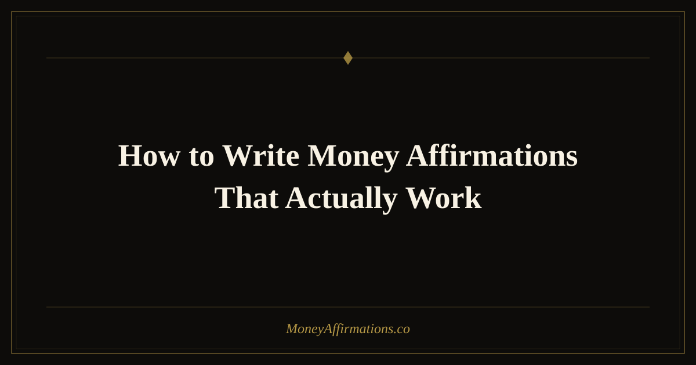

How to Write Money Affirmations That Actually Work

Most affirmation advice skips the most important part: the writing. People copy generic statements from the internet and repeat them dutifully, then wonder why nothing shifts. The truth is that the most effective affirmations are personal — written to address your specific limiting beliefs, in language that your particular mind finds credible. This guide teaches you the craft of writing money affirmations that hit the mark, complete with five before-and-after rewrites and ten additional examples to use as models or use directly.
What Are Well-Written Money Affirmations?
A well-written money affirmation is first-person, present-tense, positive in framing, and emotionally plausible. It should target a belief you actually hold, not a generic aspiration. It uses specific, vivid language rather than vague platitudes. And crucially, it should feel like a stretch — true enough to be credible, bold enough to require a shift. The difference between a weak affirmation and a strong one is often a single word or a slight reframe that moves it from hollow to felt. The table below illustrates this at a glance.
| Weak Affirmation | Why It Fails |
|---|---|
| I will be rich someday. | Future tense — pushes abundance forward, never now. "Someday" has no deadline and no identity claim. |
| I don't worry about money. | Negative framing — the brain must first process "worry" and "money" together. Reinforces the association it tries to break. |
| Money comes to me easily. | Vague and passive — no identity statement, no emotional anchor, easy to dismiss as wishful thinking. |
| I am abundant. | Too abstract. Sounds like a copy-paste. No specific belief targeted, no emotional texture. |
| I attract wealth. | Overused, stripped of meaning through repetition. Most minds hear this as background noise. |
15 Example Money Affirmations (Strong, Specific, Effective)
- I am someone who earns well, saves consistently, and invests with confidence.
- Money respects me because I respect it — I track it, grow it, and use it with intention.
- I am worthy of charging premium rates, and the right clients recognize and celebrate my value.
- Financial abundance is my natural state, and I return to it easily whenever I drift from it.
- I make decisions from abundance, not fear, and this opens doors that scarcity would have slammed shut.
- I welcome large sums of money into my life with calm confidence and genuine gratitude.
- My income grows month over month because I consistently create real value in the world.
- I have a healthy, respectful relationship with money, and it shows in every area of my financial life.
- I release the story that earning money is hard, and I step into the truth that wealth flows to those who serve well.
- I am financially resilient — I handle setbacks with clarity and rebuild with even greater strength.
- Every investment I make in myself compounds and returns to me in unexpected and wonderful ways.
- I attract opportunities that align with my values and expand my financial freedom.
- Wealth and integrity coexist in my life — I grow rich by being genuinely useful to others.
- I give myself permission to want more money, because having more means I can give more and live more fully.
- I am the kind of person who builds generational wealth, and every financial choice I make reflects that identity.
How to Use This: The 5-Step Writing Process
Here are five before-and-after rewrites that demonstrate the process of strengthening a weak affirmation into one that can actually shift your mindset.
Before: "I will be wealthy." → After: "I am actively building wealth right now, and my financial future is already taking shape through today's choices."
Before: "I am not afraid of money." → After: "I feel safe and empowered around money — I understand it, I manage it well, and it serves my goals."
Before: "I attract abundance." → After: "I consistently attract financial abundance because I show up with skill, generosity, and a belief in my own value."
Before: "Money is easy for me." → After: "Earning, managing, and growing money comes more naturally to me every day as I deepen my financial knowledge and trust."
Before: "I have enough money." → After: "I have more than enough money for everything that truly matters, and I am grateful for the steady abundance in my life."
The writing process itself is simple: (1) identify the limiting belief you want to reverse, (2) flip it into a positive present-tense statement, (3) add a "because" clause that grounds it in reality or behavior, (4) read it aloud and adjust any word that feels emotionally flat or implausible, (5) write the final version in your own natural voice.
Tips to Make Them Work Faster
- Write in your own voice. Formal or flowery language you'd never actually use weakens the personal resonance. If you say "dude" and "honestly" in real life, your affirmations can too.
- Target one belief per affirmation. Trying to address three limiting beliefs in a single statement dilutes the impact of each.
- Test each one aloud. If you cringe, it needs revision. If you feel a tiny lift — even a 10% more positive feeling — it's working.
- Update them as you grow. An affirmation that once felt like a big stretch may start feeling true — when that happens, write a new, bolder version.
- Keep your list short. Three to five custom affirmations practiced deeply outperforms fifty generic ones repeated superficially.
Frequently Asked Questions
How long should a money affirmation be?
One to two sentences is ideal. Long enough to be specific and emotionally resonant, short enough to memorize and repeat without conscious effort. If you need three sentences to capture your intention, consider splitting it into two separate affirmations — they'll both be more powerful for the focus.
Can I use someone else's affirmations or do they have to be mine?
Pre-written affirmations work well as starting points, especially when they target beliefs you recognize in yourself. The key is to personalize them slightly — swap a word, add a specific detail, change the emotional tone — so they feel genuinely yours rather than borrowed. A personally crafted affirmation that resonates deeply will always outperform a perfect-sounding one that doesn't move you.
What's the single biggest mistake people make when writing affirmations?
Writing affirmations they think they should want rather than ones that address beliefs they actually hold. If you have a deep fear that you'll always struggle financially, writing "I am a millionaire" skips over that fear entirely and your subconscious knows it. Start closer to where you are: "I am making steady, real progress toward financial security, and that progress is already visible in my life." Then build from there.
Great affirmations are the foundation — but they work best when they're part of a broader practice. For an extensive library of professionally written statements covering every financial area, explore our money affirmations collection, where you'll find hundreds of strong, specific affirmations ready to use or adapt.